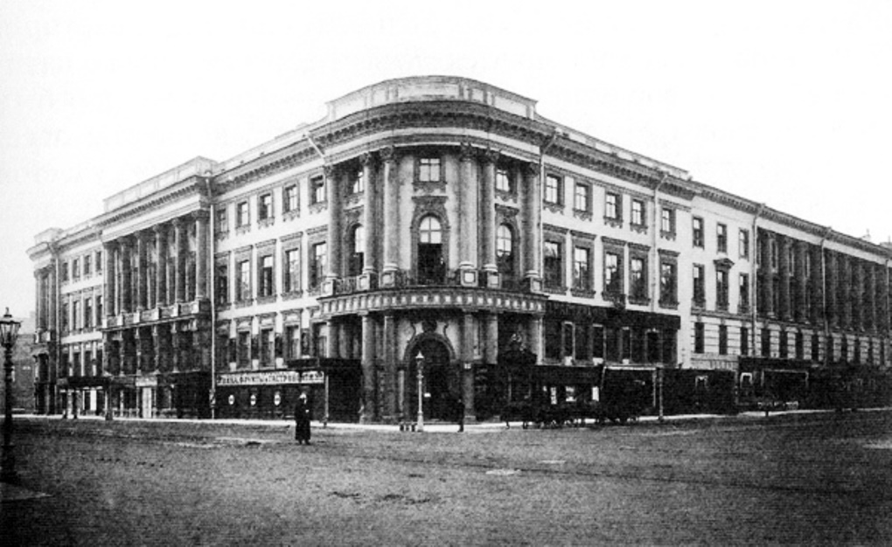
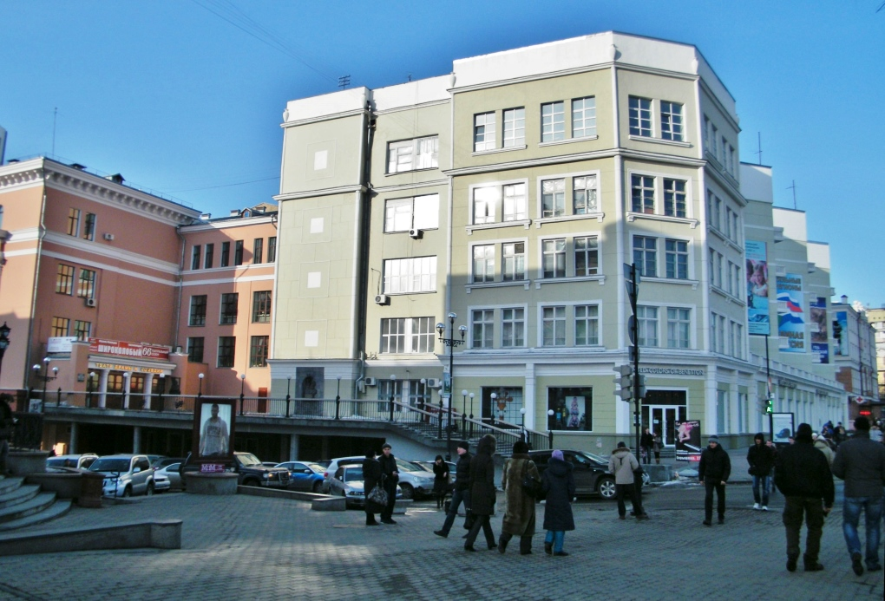

Дом-коммуна
Дом-комму́на — яркое архитектурное и социальное явление 1920-х — начала 1930-х годов, ставшее воплощением пролетарской идеи «обобществления быта», одно из проявлений эпохи конструктивизма.
Дореволюционные «фаланстеры»
Идея социалистов-утопистов о создании «нового массового человека» привела их, и прежде всего Фурье, к созданию концепции «фаланстера» — новой формы жилья, где люди смогли бы приучиться к коллективизму, освободились бы от тягот домашнего труда, семейных уз и всего мелкого и частного
В России идея «фаланстера» приобрела особую популярность после выхода романа Н. Г. Чернышевского «Что делать?», главная героиня которого Вера Павловна в своём четвёртом сне видит обитателей фаланстера.
Среди поддержавших эту идею и попытавшихся воплотить её в жизнь были молодые художники во главе с И. Н. Крамским, снявшие сообща квартиру вначале на 17-й линии Васильевского острова, а затем на Вознесенском проспекте в Санкт-Петербурге:
"…в этом общежитии выигрывалась масса времени, так бесполезно растрачиваемого жизнью в одиночку. Что мог иметь каждый из этих бедных художников один, сам по себе? Какую-нибудь затхлую, плохо меблированную комнату с озлобленной на весь мир хозяйкой. Скверный обед в кухмистерской, разводитель катаров желудка, желчного настроения и ненависти ко всему… А здесь, в артели, соединившись в одну семью, эти самые люди жили в наилучших условиях света, тепла и образовательных пособий." И. Е. Репин[1]
В 1863 году на Знаменской улице в Петербурге вдохновлённый идеями Фурье литератор В. А. Слепцов организовал так называемую Знаменскую коммуну, просуществовавшую недолго, поскольку, по признанию одной из её обитательниц, «…женщины того времени обнаруживали отвращение к хозяйству и простому труду, перед которым они в теории преклонялись.»[2] В глубинке коммуной стали пугать мамаш:
"В ней… вербовали всех молодых девушек, желающих покинуть родительский дом. Молодые люди жили в ней при полнейшем коммунизме. Прислуги в ней не полагалось, и благороднейшие девицы-дворянки собственноручно мыли полы и чистили самовары." С. В. Ковалевская[3]
Ещё ужаснее в глазах современников выглядел фаланстер в Эртелевом переулке:
"Коммуна занимала маленькую комнатку, и её членами состояли В[оскресенский], С[ергиевский], С[оболев], князь Ч[еркезов] и В[олков], и тут же пребывали две нигилистки, К[оведяева]-В[оронцова] и Т[имофеева], и все они спали вповалку… Подойдя к столу, [я] увидал такую массу грязи, что мне, хоть и непривыкшему к комфорту и порядку, и то показалось чересчур неприятно." Н. И. Свешников[4]
К концу XIX века стало ясно, что освобождать человека от бытовых обязанностей можно иначе — развернув сферу услуг (прачечных, общепита и т. д.).
Построение нового быта
Идея фаланстера была близка идеологам Октябрьской революции. Ленинский черновой набросок проекта «О реквизировании квартир богатых для облегчения нужд бедных» содержит мысль о принципиальной невозможности и ненужности отдельного жилья для каждого человека, даже в виде отдельной комнаты[5]. Тем более, что на тот момент существовал и некий прообраз домов-коммун — рабочие казармы.
Дома Совета
С октября 1917 года большевистские руководители организовали в Смольном не только штаб революции, но и свой быт. В здании размещались жилые квартиры и комнаты, библиотека, музыкальная школа, ясли, баня, столовая; здесь проживало около 600 человек, которых обслуживало более 1000 рабочих и служащих.[5] Одними из первых разработку проектов здания «нового типа» — домов-коммун, домов Совета, Совдепов — начали в 1919 году архитекторы-члены Живскульптарха.
В Москве и Петрограде появляются т. н. «дома Совета». В Москве под первое такое общежитие-коммуну переоборудовали гостиницу «Националь», в Петрограде 1-м Домом Совета стала гостиница «Астория», а 2-м — «Европейская». Это были по сути общежития с отдельными комнатами, общей столовой и общими кухнями для проживания совслужащих по ордерам. Проживание и питание в таких домах Совета были бесплатными.
В период разрухи и голода 1918—1922 годов определённую заботу власть проявляла и о деятелях культуры, размещая их в подобных коммунах: Доме литераторов на Бассейной улице и Доме искусств (ДИСК) в особняке банкира С. П. Елисеева на Невском проспекте, куда
"…перебрались бездомные литераторы. Они без сожаления покинули свои нетопленные жилища. Петрокоммуна снабдила елисеевский дом всем необходимым для жизни." Вс. Рождественский[6]
По словам К. И. Ротикова, ДИСК «был первым опытом перевоспитания интеллигенции путём подкормки»[7].
Дома Совета и подобные учреждения прекратили своё существование после специального декрета ВЦИК и СНК РСФСР от 12 сентября 1923 года. Гостиницы вернулись к выполнению привычных функций, а советская номенклатура перебралась в отдельные квартиры.
Молодёжные коммуны
В 1920-е годы идею фаланстеров подхватил комсомол. В октябре 1920 года III съезд РКСМ предложил «в целях рационального улучшения положения… рабочей молодёжи в жилищном отношении… государственное декретирование домов-коммун рабочей молодёжи»[8]. Газета «Северный комсомолец» 2 марта 1924 года писала:
Молодёжь скорее, чем кто-либо должна и может покончить с традициями отмирающего общества... Пролетарский коллективизм молодёжи может привиться только тогда, когда и труд, и жизнь молодёжи будут коллективными. Лучшим проводником такого коллективизма могут явиться общежития-коммуны рабочей молодёжи. Общая коммунальная столовая, общность условий жизни - вот то, что необходимо прежде всего для воспитания нового человека.[9]
Обобществление понималось на современный взгляд весьма своеобразно:
оловой вопрос просто разрешить в коммунах молодёжи. Мы живём с нашими девушками гораздо лучше, чем идеальные братья и сёстры. О женитьбе мы не думаем, потому что слишком заняты, и к тому же совместная жизнь с нашими девушками ослабляет наши половые желания. Мы не чувствуем половых различий. В коммуне девушка, вступающая в половую связь, не отвлекается от общественной жизни.[9]
Партийные деятели всецело поддерживали молодёжный коммунарский задор, считая, что коммуна —
"...это организация на почве обобществления быта новых общественных отношений, новых взаимоотношений между членами коммуны, новых... товарищеских отношений между мужчиной и женщиной." Н. К. Крупская[9]
Общежития-коммуны создавались как при различных предприятиях и учебных заведениях, так и стихийно — самими молодыми людьми, вдохновлёнными идеями обобществления быта и разрушения патриархальной семьи. Чаще всего они размещались в квартирах старых доходных домов, а то и в вовсе не приспособленных помещениях — старых казармах, заводских помещениях, кельях (напр., Александро-Невской лавры). Вера Панова вспоминала о своих друзьях, которые объявили себя коммунарами и «поселились в ванной комнате какой-то коммунальной квартиры, один спал на подоконнике, двое на полу, лучшим ложем, занимаемым по очереди, была ванна»[10].
Во многих случаях, в особенности в коммунах рабочей молодёжи, создававшихся на ленинградских фабриках и заводах, быт обобществлялся полностью, и прежде всего в плане финансов: от 40 до 100 % заработка обобществлялось, и коммунары получали из «общака» деньги на обеды, трамвайные билеты, табак. Из общих денег выписывались газеты, отчислялась оплата за баню и кино, платились алименты. Без разрешения коллектива нельзя было покупать вещи.[11]
Официально такие коммуны просуществовали до XVII съезда ВКП(б) (1934), признавшего, что это были «уравниловско-мальчишеские упражнения левых головотяпов»[12].
Борьба за улучшение быта молодёжи привела к строительству специальных общежитий и целых городков, ярким примером которых является студенческий городок Политехнического института на Лесном проспекте в Санкт-Петербурге.
Новый тип жилища
В конце 1920-х годов на фоне свёртывания нэпа возродилась дискуссия о новых типах рабочих жилищ, главным из которых понимался дом-коммуна. Участники дискуссии были убеждены в том, что новый быт в старых архитектурных пространствах строить невозможно. В 1926 году был организован конкурс архитектурных проектов, организаторы которого поставили перед участниками задачу:
…проникнуться новыми запросами к жилищу и… дать проект такого дома с общественным хозяйством, который превратил бы так называемый жилищный очаг из тесной, скучной, а подчас и тяжёлой колеи для женщины в место приятного отдыха.[9]
В годы первой пятилетки, с появлением на улицах первых конструктивистских построек, стали вырастать и новые жилые дома-коммуны. Возведение домов-коммун регулировалось «Типовым положением о доме-коммуне» Центржилсоюза (1928), который предписывал коммунарам при вселении отказаться от накопленных предыдущими поколениями мебели и предметов быта и предполагал коллективное воспитание детей, стирку, уборку, приготовление еды и удовлетворение культурных потребностей.[9]
Часть архитекторов реализовывала эту концепцию в едином архитектурном объёме, объединявшем индивидуальные квартиры и коммунальные учреждения — по такому принципу были возведены дом-коммуна архитектора Николаева и Дом Наркомфина в Москве, Дом-коммуна инженеров и писателей, Дом политкаторжан, Бабуринский, Батенинский и Кондратьевский жилмассивы в Ленинграде. В квартирах на одну-две семьи предусматривались умывальники, кухни (или шкафы-кухни для разогрева пищи, доставлявшейся в термосах из фабрик-кухонь) и ватерклозеты, а банно-прачечные процедуры осуществлялись либо в ванно-душевых комплексах на несколько квартир, либо в банях и прачечных, входивших в состав комплекса.
Известная обитательница одного из построенных тогда домов-коммун вспоминала:
"Его официальное название — «Дом-коммуна инженеров и писателей». А потом появилось шуточное, но довольно популярное в Ленинграде прозвище — «Слеза социализма». Нас же, его инициаторов и жильцов, повсеместно величали «слезинцами». Мы, группа молодых (очень молодых!) инженеров и писателей, на паях выстроили его в самом начале 30-х гг. в порядке категорической борьбы со «старым бытом»… Мы вселились в наш дом с энтузиазмом… и даже архи непривлекательный внешний вид «под Корбюзье» с массой высоких крохотных клеток-балкончиков не смущал нас: крайняя убогость его архитектуры казалась нам какой-то особой строгостью, соответствующей времени… Звукопроницаемость же в доме была такой идеальной, что если внизу, на третьем этаже… играли в блошки или читали стихи, у меня на пятом уже было всё слышно вплоть до плохих рифм. Это слишком тесное вынужденное общение друг с другом в невероятно маленьких комнатках-конурках очень раздражало и утомляло." О. Ф. Берггольц[13]
Некоторые архитекторы доводили идею коммуны до абсурда. Н. С. Кузьмин планировал в домах-коммунах общие спальни на шесть человек и «двуспальни» («кабины для ночлега»), где смогли бы по особому расписанию на законных основаниях уединяться супружеские пары. Этот проект по настоянию Ю. Ларина пытались реализовать на строительстве Сталинградского тракторного завода.[14] Сами коммунары потом писали:
Позднее, когда мы лучше познакомились друг с другом, пожили буднями, мы увидели, какие мы разные люди, и как калечилась инициатива ребят из-за скороспелого желания быть стопроцентными коммунарами.[15]
Практика домов-коммун была осуждена специальным постановлением ЦК ВКП(б) от 16 мая 1930 года «О работе по перестройке быта», где, в частности, говорилось:
ЦК отмечает, что наряду с ростом движения за социалистический быт имеют место крайне необоснованные, полуфантастические, а поэтому чрезвычайно вредные попытки отдельных товарищей (Сабсович, отчасти Ларин и др.) «одним прыжком» перескочить через те преграды на пути к социалистическому переустройству быта, которые коренятся, с одной стороны, в экономической и культурной отсталости страны, а с другой — в необходимости в данный момент максимального сосредоточения всех ресурсов на быстрейшей индустриализации страны, которая только и создает действительные материальные предпосылки для коренной переделки быта. К таким попыткам некоторых работников, скрывающих под «левой фразой» свою оппортунистическую сущность, относятся появившиеся в последнее время в печати проекты перепланировки существующих городов и перестройки новых исключительно за счет государства, с немедленным и полным обобществлением всех сторон быта трудящихся: питания, жилья, воспитания детей с отделением их от родителей, с устранением бытовых связей членов семьи и административным запретом индивидуального приготовления пищи и др. Проведение этих вредных утопических начинаний, не учитывающих материальных ресурсов страны и степени подготовленности населения, привело бы к громадной растрате средств и жестокой дискредитации самой идеи социалистического переустройства быта.[16]
Вкупе с позицией XVII съезда, казалось бы, практика домов-коммун должна была кануть в Лету. Но в 1934 году Общество бывших политкаторжан и ссыльнопоселенцев строит в Ленинграде дом-коммуну на 200 квартир со столовой, клубным залом, читальней, детским садом, амбулаторией и стационаром, аптекой, гаражом и т. п. Ёмкость квартир определялась из расчёта один человек на комнату.[11] Однако большинство поселившихся в возведённом Доме политкаторжан вскоре подверглись репрессиям[источник не указан 1420 дней], а сам дом, как и большинство других, был реконструирован.
Наследие домов-коммун
Те немногие дома-комунны, которые были изначально выстроены для этой цели, потребовали серьезной реконструкции для дальнейшего использования даже в качестве студенческих или рабочих общежитий. Парадоксальным образом принципы планирования комунн отразились в современных хостелах, где присутствуют общие спальни, кухни, холлы, но пары могут временно уединяться в отдельных помещениях. Однако хостелы предназначены для временного проживания и хотя "постоянные" жильцы часто присутствуют, но число их невелико.
Вопрос о влиянии домов-комунн на северокорейские дома-"гармоники" [17] является дискуссионным.